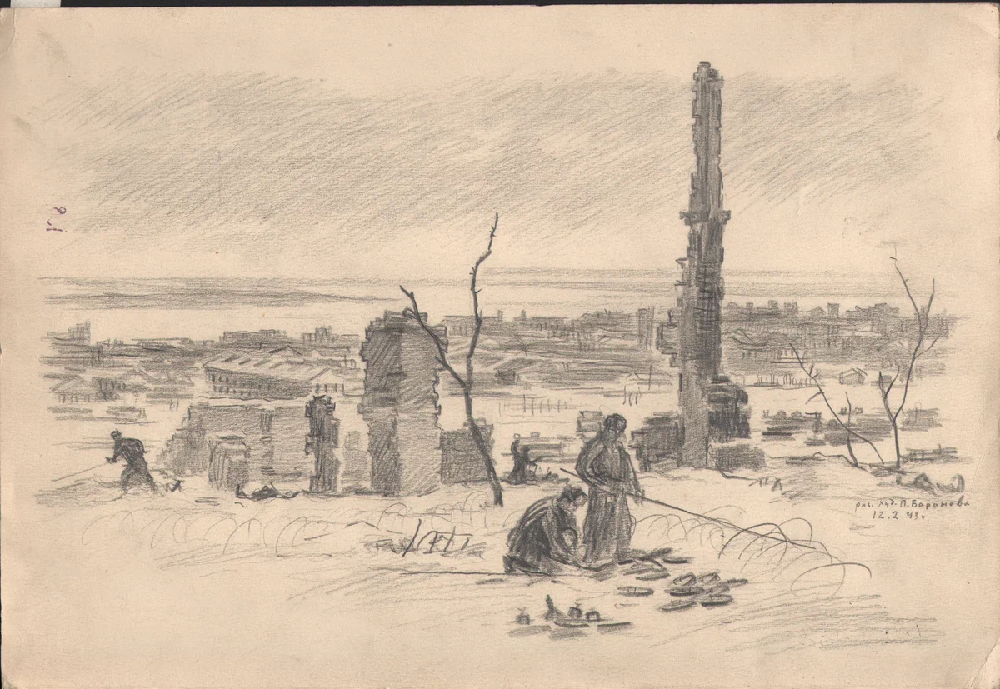
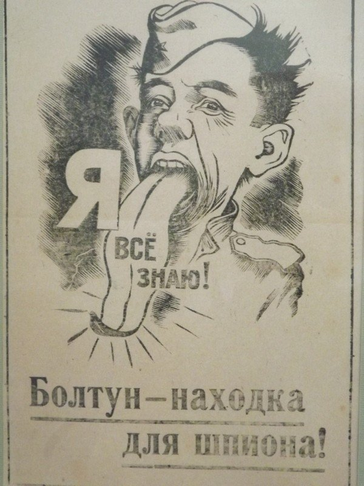
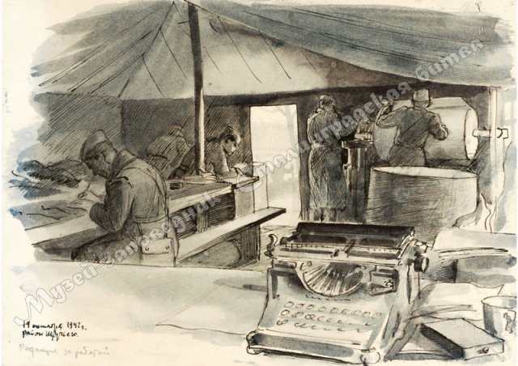
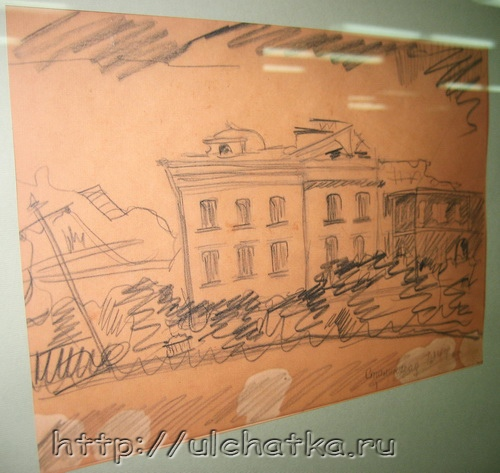
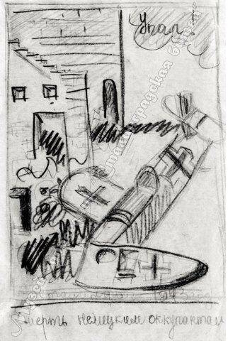

Битва глазами художников
Баранов Петр Иванович
Родился в деревне Баранове (ныне Иркутской области). В 1930-1934 гг. учился в Иркутском художественном техникуме. В 1941 г. окончил Московский государственный художественный институт. С 1933 г. – участник выставок. С 1945 г. – в Студии им. Грекова. Участник Великой Отечественной войны. Призван на фронт в июне 1941 г. Прошел боевой путь от Волги до Влтавы. В период Сталинградской битвы был бойцом 5-й горной инженерно-минной бригады. Воевал на Юго-Западном, Донском, Степном фронтах, закончил войну в составе 2-го Украинского фронта. Награжден орденом «Красной Звезды», медалями «За боевые заслуги», «За победу над Германией в Великой Отечественной войне 1941-1945 гг.»
Минеры 5-й инженерно-минной бригады РГК разминируют Сталинград 1943г. Бумага, карандаш
вокруг бойцов руины города, вдали виднеется замерзшая гладь Волги, но им не до созерцания окрестностей – дан приказ очистить территорию от взрывчатых веществ. Работа спорится: в снегу у ног минеров уже лежат снятые немецкие противотанковые «Теллермины 35», рядом кучка обезвреженных противопехотных SMi-35 – печально известные каждому пехотинцу Великой Отечественной «попрыгушки». Тут же – горка еще вчера смертоносных, сейчас уже безопасных Schu-mine 42: тротил из них вынут, а деревянные ящички находчивые бойцы отведут под табачницы.

Параход Сталинец 1943г. Бумага, карандаш
Налеты на Волгу начались с 25 июля 1942 года. С этого дня суда стали гореть и тонуть одно за другим. Кораблей военной флотилии было мало, они оказались рассосредоточенными по плесу и действенной помощи речному флоту в первое время оказать не смогли. За неделю погибло восемьдесят судов. Немцы безнаказанно носились над самыми мачтами и сначала сбрасывали бомбы, потом поливали палубы и надстройки очередями из крупнокалиберных пулеметов. Бомбардировщики прилетали в основном, ночью, поэтому капитаны загодя, с приходом сумерек, старались поставить судно в укромном месте, ближе к берегу. Это помогало.
Ворогушин Юрий Владимирович
Родился в 1913 г. в Туле. До войны работал в редакции областной газеты «Коммунар». В рядах Красной Армии с марта 1942 г. Прошёл с редакцией газеты «За Родину» 64-й (7-й гв.) армии боевой путь от Сталинграда до Праги. В годы войны делал газетные зарисовки, карикатуры, плакаты, портреты героев. Награждён орденами Отечественной войны II степени, Красной Звезды, медалями «За оборону Сталинграда», «За взятие Будапешта», «За победу над Германией в Великой Отечественной войне 1941-1945 гг.». После войны вернулся в Тулу. Заслуженный художник РСФСР.

Болтун - находка для шпиона. Плакат-листовка, 1942г. Типографская печать
Фраза: «Держи язык за зубами» известна каждому. Её использовали раньше, ценной она является и сейчас. В прошлом веке во время войны было очень важно молчать о том, что ты знаешь. Ведь, проболтавшись по глупости, можно было открыть тайну другого человека или какие-то военные секреты, а шпионы были повсюду.

Редакция за работой, 1942г. Бумага, акварель, карандаш
Юрий Ворогушин рисует редакцию фронтовой газеты, находящуюся в походной палатке, корреспондентов, только что вернувшихся из окопов и пишущих очередной репортаж («Редакция за работой»). Одной из тем был сталинградский пейзаж.
Рудыкина Женя (Жорова Евгения Петровна)
Родилась в 1932 году в г. Сталинграде. С семьёй оказалась в сражающемся городе. Испытала все тяготы войны. Весной 1943 г. на мине подорвался её брат. Эти переживания нашли отражение в её детских рисунках. После войны закончила Ленинградский инженерно-строительный институт. В течение 20 лет, с 1962 г. была главным архитектором г. Волжского, затем стала главным архитектором Тракторозаводского района г. Волгограда. Главной работой последних лет ее жизни было создание Свода культурного наследия Царицына-Сталинграда-Волгограда и Волжского. Евгения Петровна была одним из основателей общественной организации «Дети военного Сталинграда», занималась темой памяти о войне.

Сталинград. 1944 год. Бумага, карандаш
Сталингра́дская би́тва — одно из важнейших и крупнейших генеральных сражений Второй мировой и Великой Отечественной войн между Красной армией и вермахтом при поддержке армий стран «оси», закончившееся победой РККА. Битва происходила с 17 июля 1942 года по 2 февраля 1943 года на территории современных Воронежской, Ростовской, Волгоградской областей и Республики Калмыкия.

Смерть немецким оккупантам, 1943г. Бумага, карандаш
«Смерть немецким оккупантам!» (укр. Смерть німецьким окупантам) — подпольная антифашистская организация в оккупированном немцами Киеве. Оформилась в 1942 году. Руководитель — Г. С. Кочубей. Проводила агитационную и диверсионную работу в Киеве и окрестных районах.
Черникова Надежда Елисеевна
Родилась в 1916 г. в г. Новосибирске Алтайского края. В 1930 г. с семьёй переехала в Сталинград. В 1939 г. закончила Сталинградское художественное училище и поступила в Харьковский художественный институт. Окончить его помешала война. Н. Е. Черникова вернулась в Сталинград. В конце августа 1942 г. эвакуировалась в Саратовскую область. После возвращения много рисовала разрушенный город, позже – его восстановление. Член Союза художников России. Заслуженный художник России.

На переправу, 1942г. Бумага, карандаш